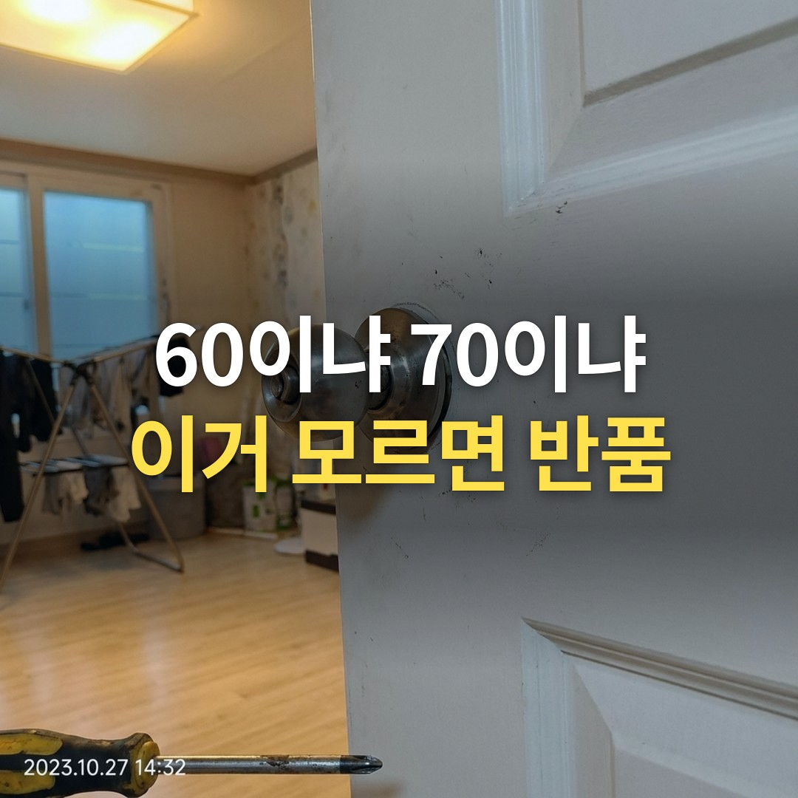
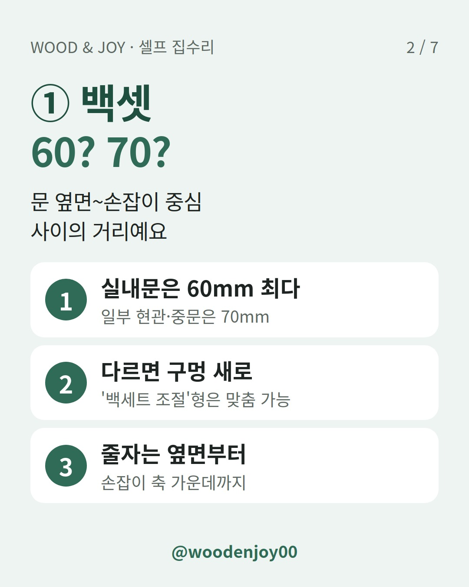
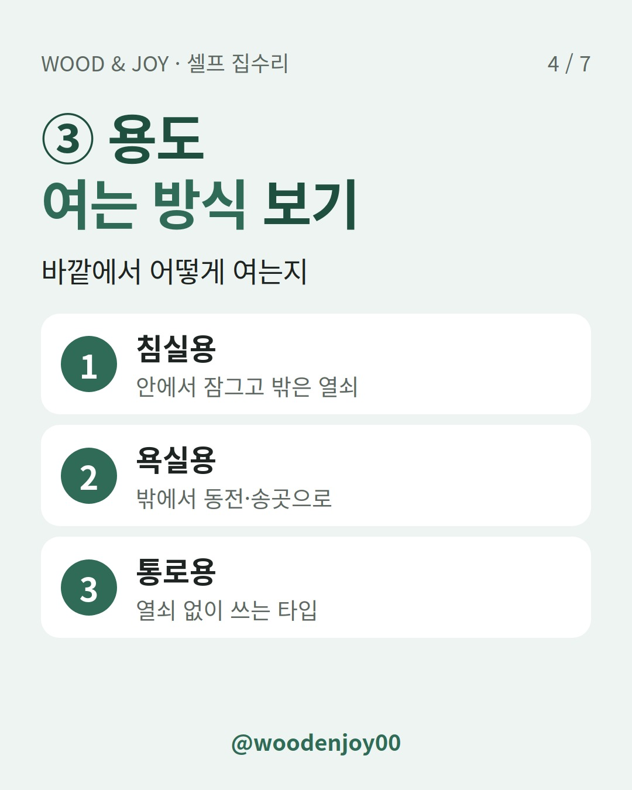
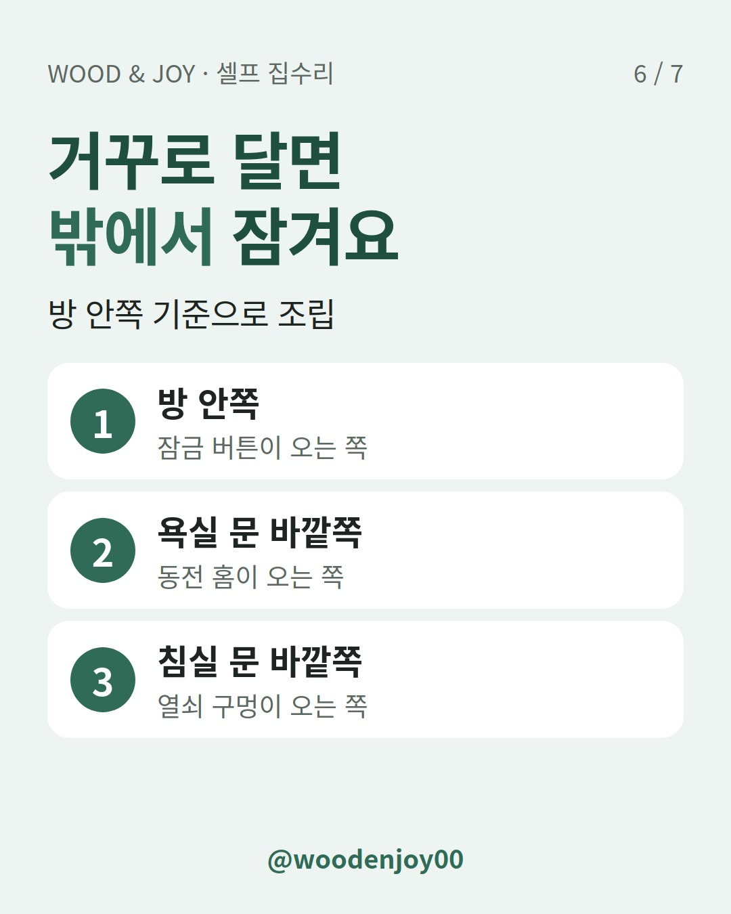

문고리 하나 사려다가 "60이에요, 70이에요?" 하는 질문에 말문이 막히셨나요?
한 줄 결론: 문고리 교체 전에는 백셋(60·70mm), 문두께, 용도 이 3가지만 재고 사세요. 규격이 다른 제품을 사면 문에 구멍을 새로 내야 할 수 있어요.

백셋은 문 옆면에서 손잡이 구멍 중심까지의 거리예요. 쇼핑몰 상품명에는 '백세트'로도 적혀 있어요.

문 옆면에 줄자를 대고 두께를 재요. 표준 범위는 35~45mm로 안내돼 있어요. 두꺼운 문은 '문두께 45-65mm'처럼 전용 상품이 따로 나오니 상품명 괄호 안 숫자를 꼭 보세요.
같은 방문손잡이라도 바깥에서 여는 방식이 달라요.
| 상품명 표기 | 안쪽 | 바깥에서 열 때 | 잘 맞는 문 |
|---|---|---|---|
| 침실용(열쇠형) | 잠금 | 열쇠 | 방 |
| 욕실용(버튼형) | 잠금 | 동전·송곳 같은 도구 | 화장실 |
| 통로용 | 열쇠 없음 | 열쇠 없음 | 잠글 일 없는 문 |
욕실용은 열쇠를 잃어버려도 밖에서 간단한 도구로 열 수 있어요. 욕실은 습기에 강한 스테인리스 계열 손잡이를 권하는 곳이 많아요.

잠금 장치가 방 밖에 달리는 실수예요. 조립은 꼭 방 안쪽 기준으로 하세요.
뺀 손잡이는 버리지 말고 챙겨 두세요. 같은 백셋·문두께를 고를 때 비교 기준이 돼요.
기존 손잡이는 실내 쪽 손잡이 목의 작은 구멍을 송곳으로 누른 채 당기면 빠지는 제품이 있어요. 구조는 제품마다 다르니 나사부터 찾아보세요.

현관문이 끝까지 안 닫힌다면 손잡이보다 도어클로저 속도 조절, 현관문이 덜 닫힐 때 나사 2개만 보세요를 먼저 보세요.
문고리 사기 전 체크리스트
Q. 동그란 손잡이를 레버형으로 바꿔도 되나요?
백셋이 같으면 대부분 맞아요. 잠금 방식이 달라지면 문짝을 더 손봐야 할 수 있어요.
Q. 이미 70mm를 샀는데 우리 집은 60mm예요.
백세트 조절형 래치인지 먼저 보세요. 조절이 안 되면 같은 규격으로 교환하는 쪽이 문을 덜 상하게 해요.
Q. 욕실 문이 안에서 잠겨 버렸어요.
욕실용은 바깥쪽 홈이나 구멍에 동전·송곳을 넣어 열 수 있게 만든 제품이 많아요.
여러분 집 방문은 동그란 손잡이인가요, 레버형인가요? 댓글로 남겨 주시면 맞는 규격 찾는 법 같이 봐 드릴게요.
겨울에 방문 아래 틈으로 바람이 든다면 문풍지 사기 전에, 향 하나로 바람 들어오는 틈부터 찾으세요도 함께 보세요.